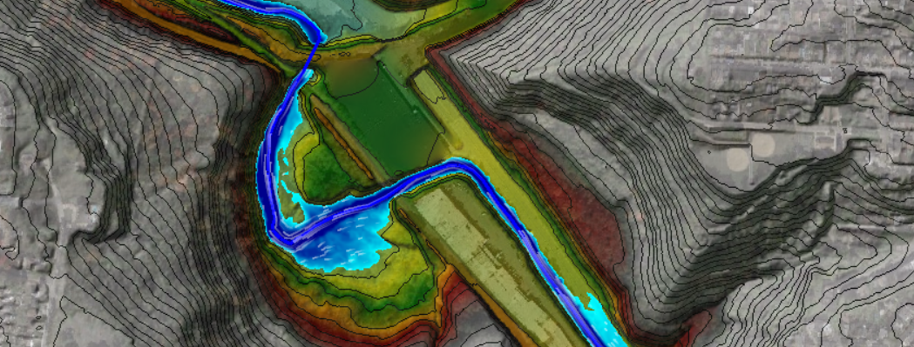

Tom Batroney, PE, CFM
Just a guy who loves his family, being mostly outdoors, and earning a paycheck by fixing water problems
Areas of Special Interest:
Hydrology and Hydraulics, Stormwater Management, Floodplain Management, Stream Restoration, Green Infrastructure, Sewer Overflows, Sewer Systems, Pollution Prevention, Climate Change, Data Visualization/Mapping
Bio
Growing up in Northeastern Pennsylvania some of my fondest memories were in the woods and next to water. Going on summer camping trips with my family, swimming in lakes, and fishing for trout in the streams.
After high school I would enroll in the Environmental Engineering program at nearby Wilkes University and learnt the princinciples of engineering water, land, and air. Water always interested me the most of the three. The physical movement of water and the biological and chemical reactions that go into treating and cleaning water. After Wilkes University I attended graduate school at Villanova University where I studied at the Villanova Urban Stormwater Partnership. There I further grew my water resources engineering knowledge in stormwater management, green infrastructure, data analytics, and hydrologic and hydraulic modeling theory.
After Villanova I would move to Pittsburgh to work in water resources engineering consulting and start my professional career. After 15 years I'm still in Pittsburgh loving what I do, most days. At heart, At heart, I'm really still the kid who loves being outdoors, learning as much as I can about water, and fixing water problems.

Resume
Employment History
Senior Water Resources Engineer, HDR (04/2022 to Present)
Providing senior water resources project technical oversight and delivery for clients throughout North America. Assisting in water resources business development, marketing activities, and strategic pursuits nationwide.
Senior Technical Director, AKRF (03/2020 to 04/2022)
Focused primarily on stormwater management project delivery and business development initiatives in the Pittsburgh and Midwest region. Project highlights included assisting in the development of climate change related technical components of the City of Pittsburgh stormwater management code and ordinances updates and associated chapters of the Stormwater Management Design Manual.
Senior Engineer, Mott MacDonald (2007 to 03/2020)
Like many early career professionals, I started my career in the field. Work primarily included stream monitoring and sewer construction inspection oversight. After a couple years in the field I would transition to the office for junior design work of stormwater, sewer collection system, and pumping station projects. Eventually I would transition to hydrologic and hydraulic modeling analyses for long term planning of sewer, stormwater, and water systems primarily for mid and large size cities in the Midwest and Northeast portions of the country.
Specialty Skills

Hands-On Sofware Experience
EPASWMM, PCSWMM, XPSWMM, InfoWorksICM, HEC-RAS, HEC-RAS 2D, HEC-HMS, HydroCAD, WaterGEMS, SewerGEMS, EPANET,
ArcGIS (ArcMap, Pro, AGOL), QGIS, Python (Pandas, GeoPandas, Matplotlib, Dash), Some PowerBI, Some HTML
Soft Skills
Self motivated learner, working within and leading technical teams, public speaking, technical report writing, creative writing, proposal writing, budgeting and project management, mentoring junior staff
Professional Societies & Volunteering
President Elect (2021 to present), American Society of Civil Engineers Pittsburgh Section
Stormwater Committee Member (2019 to present), Pennsylvania Water Environment Association
Secretary (2017 to present), Wilkinsburg Shade Tree Commission
Board Member (2020 to present), Watersheds of South Pittsburgh
Board Member (2020 to present), UpstreamPgh
President (2009-13), Environmental Water Resources Institute Pittsburgh Chapter
Board Member (2013-16), American Society of Civil Engineers Pittsburgh Section
Education
2007 MS Water Resources Engineering, Villanova University
Master's Thesis: The Implications of the First Flush Phenomena on Stormwater BMP Design
2005 BS Environmental Engineering, Wilkes University
Conference Presentations, Papers, and Op-Eds
"The Benefits of Incorporating Antecedent Moisture Conditions in Collection System Models"
"Make it Money Well Spent: Assuring Accurate Flow Data through Continuous QA/QC Measures"
"Using the Envision Rating System to Evaluate the Sustainability Metrics of GSI Designs"
"Applying the Envision Rating System to Planning Level Projects"
"A Systematic and Connected Approach to Siting Green Infrastructure"
"Collaboration Across Boundaries to Achieve Integrated Watershed Management"
“Unlocking Twitter and High-Resolution Radar Rainfall to Better Understand Urban Flooding Patterns and Extents”
“Achieving Multi-Objective Community Co-Benefits with MS4 Projects” with Shandor Szalay
“A Data Driven Approach to Pittsburgh Regional Flooding: A Path Forward” with Lisa Brown
“Incorporating Flood Resilience into Green Infrastructure Programs” with Shandor Szalay
“The case for stormwater fees in the Pittsburgh region", Essay written for the Public Source
“David Dzombak and Tom Batroney: The Clean Water Act at 50", Op-Ed written for Pittsburgh Tribune Review
“How Pittsburgh went from three large sewers to clean rivers", Op-Ed written for Pittsburgh Post-Gazette
“Pittsburgh's Lost and Forgotten Streams", Essay written for Upstream Pittsburgh
Contact
Click icons on lower left side panel to contact me via Twitter, LinkedIn, or direct email.